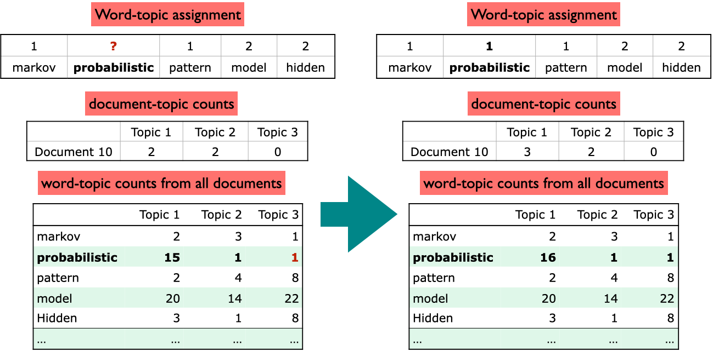

Advanced Machine Learning (Large Language Models)
Language Models
- It computes the probability distribution of a sequence of words.
- \(P(w_1, w_2, ..., w_t)\)
- E.g. P(“I have read this book) > P(”Eye have red this book”)
- Can also get the probability of the upcoming word.
- \(P(w_t | w_1, w_2, ..., w_{t-1})\)
- E.g. P(“book” | “I have read this”) > P(“book” | “I have red this”)
Large Language Models
- Large language models are trained on a large corpus of text.
Markov Model
- High-level: The probability of a word depends only on the previous word (forget everything written before that).
- Idea: Predict future depending upon:
- The current state
- The probability of change
Markov Assumption
Naive probability of a sequence of words: \[P(w_1, w_2, ..., w_t) = P(w_1)P(w_2|w_1)P(w_3|w_1, w_2)...P(w_t|w_1, w_2, ..., w_{t-1})\]
e.g. \[P(\text{I have read this book}) = P(\text{I})P(\text{have}|\text{I})P(\text{read}|\text{I have})P(\text{this}|\text{I have read})P(\text{book}|\text{I have read this})\]
Or simply: \[P(w_1, w_2, ..., w_t) = \prod_{i=1}^{t} P(w_i|w_{1:i-1})\]
But this is hard, so in Markov model (n-grams), we only consider the n previous words. With the assumption:
\[P(w_t|w_1, w_2, ..., w_{t-1}) \approx P(w_t| w_{t-1})\]
Markov Chain Definition
- Have a set of states \(S = \{s_1, s_2, ..., s_n\}\).
- A set of discrete initial probabilities \(\pi_0 = \{\pi_0(s_1), \pi_0(s_2), ..., \pi_0(s_n)\}\).
- A transition matrix \(T\) where each \(a_{ij}\) is the probability of transitioning from state \(s_i\) to state \(s_j\).
\[ T = \begin{bmatrix} a_{11} & a_{12} & a_{13} & \dots & a_{1n} \\ a_{21} & a_{22} & a_{23} & \dots & a_{2n} \\ \dots \\ a_{n1} & a_{n2} & a_{n3} & \dots & a_{nn} \end{bmatrix} \]
- Properties:
- \(0 \leq a_{ij} \leq 1\)
- rows sum to 1: \(\sum_{j=1}^{n} a_{ij} = 1\)
- columns do not need to sum to 1
- This is assuming Homogeneous Markov chain (transition matrix does not change over time).
Markov Chain Tasks
- Predict probabilities of sequences of states
- Compute probability of being at a state at a given time
- Stationary Distribution: Find steady state after a long time
- Generation: Generate a sequences that follows the probability of states
Stationary Distribution
- Steady state after a long time.
- Basically the eigenvector of the transition matrix corresponding to the eigenvalue 1.
\[\pi T = \pi\]
- Where \(\pi\) is the stationary probability distribution
- Sufficient Condition for Uniqueness:
- Positive transitions (\(a_{ij} > 0\) for all \(i, j\))
- Weaker Condition for Uniqueness:
- Irreducible: Can go from any state to any other state (fully connected)
- Aperiodic: No fixed period (does not fall into a repetitive loop)
Learning Markov Models
- Similar to Naive Bayes, Markov models is just counting
- Given \(n\) samples/ sequences, we can find:
- Initial probabilities: \(\pi_0(s_i) = \frac{\text{count}(s_i)}{n}\)
- Transition probabilities: \(a_{ij} = \pi(s_i| s_j) = \frac{\text{count}(s_i, s_j)}{\text{count}(s_i)} = \frac{\text{count of state i to j}}{\text{count of state i to any state}}\)
n-gram language model
- Markov model for NLP
nin n-gram means \(n-1\) previous words are considered- e.g.
n=2(bigram) means consider current word for the future - DIFFERENT from Markov model definition bigram= markov model with
n=1(we normally use this definition in NLP)
- e.g.
- We extend the definition of a “state” to be a sequence of words
- e.g. “I have read this book” -> bigram states: “I have”, “have read”, “read this”, “this book”
- example: “I have read this book”
- trigram (n=2): \(P(\text{book} | \text{read this})\)
- n=3: \(P(\text{book} | \text{have read this})\)
Note: n we use above is not the same as n in n-gram
Evaluating Language Models
- Best way is to embed it in an application and measure how much the application improves (extrinsic evaluation)
- Often it is expensive to run NLP pipeline
- It is helpful to have a metric to quickly evaluate performance
- Most common intrinsic evaluation metric is perplexity
- Lower perplexity is better (means better predictor of the words in test set)
Perplexity
Let \(W = w_1, w_2, ..., w_N\) be a sequences of words.
\[ \text{Perplexity}(W) = P(w_1, w_2, ..., w_N)^{-\frac{1}{N}} \\ = \sqrt[N]{\frac{1}{P(w_1, w_2, ..., w_N)}} \]
For n=1 markov model (bigram):
\[P(w_1, w_2, ..., w_N) = \prod_{i=1}^{N} P(w_i|w_{i-1})\]
So…
\[ \text{Perplexity}(W) = \sqrt[N]{\prod_{i=1}^{N} \frac{1}{P(w_i|w_{i-1})}} \]
- Increase
nwill decrease perplexity => better model - Too high still bad because of overfitting
Applications of Markov Models
Google PageRank
- Idea: The importance of a page is determined by the importance of the pages that link to it.
- Markov Model: The probability of being on a page at time \(t\) depends only on the page at time \(t-1\).
- Transition Matrix: The probability of going from page \(i\) to page \(j\) is the number of links from page \(i\) to page \(j\) divided by the number of links from page \(i\).
- Add \(\epsilon\) to all values so that matrix is fully connected
- Normalize so sum of each row is 1
- Stationary Distribution: The stationary distribution of the transition matrix gives the importance of each page.
- It shows the page’s long-term visit rate
Basic Text Preprocessing
- Text is unstructured and messy
- Need to “normalize”
Tokenization
- Sentence segmentation: text -> sentences
- Word tokenization: sentence -> words
- Process of identifying word boundaries
- Characters for tokenization: | Character | Description | | — | — | | Space | Separate words | | dot
.| Kind of ambiguous (e.g.U.S.A) | |!,?| Kind of ambiguous too | - How?
- Regex
- Use libraries like
nltk,spacy,stanza
Word Segmentation
- In NLP we talk about:
- Type: Unique words (element in vocabulary)
- Token: Instances of words
word-based vs character-based language models
| Feature | Word-Based | Character-Based |
|---|---|---|
| Advantages | - Faster training and inference due to smaller vocabulary size | - Can handle unseen words (out-of-vocabulary) and typos by generating characters |
| - Leverages existing knowledge of grammar and syntax through word relationships | - More flexible for generating creative text formats like code or names | |
| Disadvantages | - Requires a large vocabulary, leading to higher memory usage and computational cost | - May struggle with complex morphology (word structure) in some languages |
| - Can struggle with unseen words or typos (resulting in “unknown word” tokens) | - May generate grammatically incorrect or nonsensical text due to lack of word-level context |
- n-gram typically have larger state space for word-based models than character-based models
Other Preprocessing Steps
- Removing stop words
- Lemmatization: Convert words to their base form
- Stemming: Remove suffixes
- e.g. automates, automatic, automation -> automat
- Not actual words, but can be useful for some tasks
- Be careful, because kind of aggressive
Other Typical NLP Tasks
- Part of Speech (POS) Tagging: Assigning a part of speech to each word
- Named Entity Recognition (NER): Identifying named entities in text
- Coreference Resolution: Identifying which words refer to the same entity
- Dependency Parsing: Identifying the grammatical structure of a sentence


Topic Modeling
- Motivation:
- Humans are good at identifying topics in documents.
- But, it is difficult to do this at scale. (e.g., 1000s of documents)
How to do Topic Modeling?
- Common to use unsupervised learning techniques
- Given hyperparameter \(K\), we want to find \(K\) topics.
- In unsupervised, a common model:
- Input:
- \(D\) documents
- \(K\) topics
- Output:
- Topic-word association: for each topic, what words describe that topic?
- Document-topic association: for each document, what topics are in that document?
- Input:
- Common approaches:
- Latent Semantic Analysis (LSA)
- Latent Dirichlet Allocation (LDA)
Latent Semantic Analysis (LSA)
- Singular Value Decomposition (SVD) of the term-document matrix. See LSA notes from 563.
\[X_{n \times d} \approx Z_{n \times k}W_{k \times d}\]
- \(n\): number of documents, \(d\): number of words, \(k\): number of topics
from sklearn.pipeline import make_pipeline
from sklearn.decomposition import TruncatedSVD
from sklearn.feature_extraction.text import CountVectorizer
lsa_pipe = make_pipeline(
CountVectorizer(stop_words="english"), TruncatedSVD(n_components=3)
)
Z = lsa_pipe.fit_transform(toy_df["text"]);Latent Dirichlet Allocation (LDA)
- Bayesian, generative, and unsupervised model
- Developed by David Blei and colleagues in 2003
- One of the most cited papers in computer science
- Document-topic distribution or topic proportions \(\theta\):
- Each document is considered a mixture of topics
- Topic-word distribution:
- Each topic is considered a mixture of words
- This is from all documents
High-level LDA Algorithm
- Set the number of topics \(K\)
- Randomly assign each word in each document to a topic
- For each document \(d\):
- Choose a distribution over topics \(\theta\) from a Dirichlet prior
- Use dirichlet distribution because it is conjugate priot (same form as posterior)
- For each word in the document:
- Choose a topic from the document’s topic distribution \(\theta\)
- Choose a word from the topic’s word distribution
- Choose a distribution over topics \(\theta\) from a Dirichlet prior
- Fit using Bayesian inference (most commonly MCMC)
Gibbs Sampling
A Markov Chain Monte Carlo (MCMC) method
Very accurate, but slow (alternative is Variational Inference, which is faster but less accurate)
Used to approximate the posterior distribution for document-topic and topic-word distributions
Main steps:
Initialization: Randomly assign each word in each document to a topic

Update topic-word assignments:
- Decrease count of current word in both topic and document distributions
- Reassign word to a new topic based on probabilities

Iterate until convergence 
Topic Modeling in Python
- 3 Main components:
- Preprocess corpus
- Train LDA (use
sklearnorgensim) - Interpret results
Preprocess Corpus
- Crucial to preprocess text data before training LDA
- Need tokenization, lowercasing, removing punctuation, stopwords
- Optionally, lemmatization or POS tagging
import spacy
nlp = spacy.load("en_core_web_md")
def preprocess_spacy(
doc,
min_token_len=2,
irrelevant_pos=["ADV", "PRON", "CCONJ", "PUNCT", "PART", "DET", "ADP"],
):
"""
Preprocess a document using spaCy
[Tokenize, remove stopwords, minimum token length, irrelevant POS tags, lemmatization]
"""
clean_text = []
for token in doc:
if (
token.is_stop == False # Check if it's not a stopword
and len(token) > min_token_len # Check if the word meets minimum threshold
and token.pos_ not in irrelevant_pos
): # Check if the POS is in the acceptable POS tags
lemma = token.lemma_ # Take the lemma of the word
clean_text.append(lemma.lower())
return " ".join(clean_text)
wiki_df = [preprocess_spacy(doc) for doc in nlp.pipe(wiki_df["text"])]Train LDA
- With
sklearn:
from sklearn.feature_extraction.text import CountVectorizer
from sklearn.decomposition import LatentDirichletAllocation
vectorizer = CountVectorizer()
dtm = vectorizer.fit_transform(wiki_df["text_pp"])
n_topics = 3
lda = LatentDirichletAllocation(
n_components=n_topics, learning_method="batch", max_iter=10, random_state=0
)
document_topics = lda.fit_transform(dtm)
# Get the topic-word distribution
sorting = np.argsort(lda.components_, axis=1)[:, ::-1]
feature_names = np.array(vectorizer.get_feature_names_out())- With
gensim:
import gensim
from gensim.corpora import Dictionary
from gensim.models import LdaModel
corpus = [doc.split() for doc in wiki_df["text_pp"].tolist()]
dictionary = Dictionary(corpus) # Create a vocabulary for the lda model
# Get document-term matrix
doc_term_matrix = [dictionary.doc2bow(doc) for doc in corpus]
# Train LDA model
num_topics = 3
lda = LdaModel(
corpus=doc_term_matrix,
id2word=dictionary,
num_topics=num_topics,
random_state=42,
passes=10,
)- Main hyperparameters read more about them in the documentation
num_topics/K: number of topicsalpha: Prior on document-topic distribution- High alpha: documents are likely to be a mixture of many topics
- Low alpha: documents are likely to be a mixture of few topics
eta: Prior on topic-word distribution- High eta: topics are likely to be a mixture of many words
- Low eta: topics are likely to be a mixture of few words
Interpret Results
- Since this is unsupervised, we need to interpret the topics ourselves
- Idea is to tell a story to humans and what we should care about and evaluate
- Common methods:
- Look at the top words in each topic and make judgements
- Word Intrusion: Add a random word to the top words and see if it is noticed
- Extrinsic evaluation: Evaluate whether topic nodel with current hyperparameters improves the results of task or not
- Quantify topic interpretability with metrics like Coherence Score
- Use
Gensim’sCoherenceModelto calculate coherence score - Score is between -1 and 1, higher is better
- Use
- Look at the top words in each topic and make judgements
Recurrent Neural Networks (RNNs)
Motivation
- Recall when modelling sequences:
- Order matters
- Sequence length can vary
- Need to capture long-term dependencies
- Problem with Markov models:
- Only capture short-term dependencies
- Sparsity problem: if there are a lot of states, the transition matrix will be very sparse
- Also need large memory to store the n-grams
- MM do not scale well
- To get closer to the ideal language model (closer to ChatGPT), here we will learn neural sequencing models.
- Problem with Feedforward Neural Networks:
- Lose temporal information
- All connects are fully connected and flow forward (no loops)
Introduction to RNNs
- RNNs are a type of neural network that can model sequences
- Similar to NN, it is supervised learning
- Solves the limited memory problem of Markov models
- Memory only scales with number of words \(O(n)\)
- They use recurrent connections to maintain a state over time.
 source: Stanford CS224d slides
source: Stanford CS224d slides - Connect the hidden layer to itself
# Pseudocode for RNN
rnn = RNN()
ff = FeedForwardNN()
hidden_state = [0, 0, 0] # depenpent on the number of hidden units
for word in input:
output, hidden_state = rnn(word, hidden_state)
prediction = ff(hidden_state)source: Video on RNN
- The states above are hidden layers in each time step
- Similar to HMMs, but state is continuous, high dimensional, and much richer
- Each state contains information about the whole past sequence
- Not that different from feedforward NNs
- Still does forward calculation
- Just have new set of weights \(U\) that connect previous hidden state to current hidden state
- These weights are also trained via backpropagation
Parameters in RNNs
- There are 3 weight matrices in RNNs:
- \(W\): input -> hidden
- size: \(d_{\text{input}} \times d_{\text{hidden}}\)
- \(V\): hidden -> output
- size: \(d_{\text{hidden}} \times d_{\text{output}}\)
- \(U\): hidden -> hidden
- size: \(d_{\text{hidden}} \times d_{\text{hidden}}\)
- \(W\): input -> hidden
- Important point: All weights between time steps are shared
- Allows model to learn patterns that are independent of their position in the sequence
Forward Pass

- Computing new state \(h_t\):
- \(h_t = g(Uh_{t-1} + Wx_t + b_1)\)
- \(g()\): activation function
- \(x_t\): input at time \(t\)
- \(b_1\): bias
- \(h_t = g(Uh_{t-1} + Wx_t + b_1)\)
- Computing output \(y_t\):
- \(y_t = \text{softmax}(Vh_t + b_2)\)
Forward Pass with PyTorch
import torch
import torch.nn as nn
from torch.nn import RNN
INPUT_SIZE = 20
HIDDEN_SIZE = 10
NUM_LAYERS = 1 # number of hidden layers
rnn = nn.RNN(INPUT_SIZE, HIDDEN_SIZE, NUM_LAYERS)
h0 = torch.randn(NUM_LAYERS, HIDDEN_SIZE) # initial hidden state
# PyTorch gives output and hidden state
output, hn = rnn(input, h0)Simple Sentiment RNN Class:
class SentimentRNN(nn.Module):
def __init__(self, vocab_size, embedding_dim, hidden_dim, output_dim):
super(SentimentRNN, self).__init__()
self.embedding = nn.Embedding(vocab_size, embedding_dim)
self.rnn = nn.RNN(embedding_dim, hidden_dim, batch_first=True)
self.fc = nn.Linear(hidden_dim, output_dim)
def forward(self, text):
embedded = self.embedding(text)
output, hidden = self.rnn(embedded)
assert torch.equal(output[:, -1, :], hidden.squeeze(0))
return self.fc(hidden.squeeze(0))
# Example usage
model = SentimentRNN(vocab_size=vocab_size, embedding_dim=100, hidden_dim=128, output_dim=2)Training RNNs
- Since it is supervised, we have: training set, loss function, and backpropagation
- Need to tailor backpropagation for RNNs
- Since hidden layers are connected to themselves, we need to backpropagate through time
- Backpropagation Through Time (BPTT)
- Unroll the RNN for a fixed number of time steps
- Calculate the loss at each time step
- Sum the losses and backpropagate
- Update the weights
- See the code for the code implementation by Andrej Karpathy
RNN Applications
Possible RNN architectures: 
- Sequence Labelling:
- E.g. Named Entity Recognition (NER) or Part-of-Speech (POS) tagging
- Many-to-many architecture
- Input are pre-trained word embeddings, outputs are tag probabilities by softmax
- Sequence Classification:
- E.g. Spam detection or sentiment analysis
- Similar to pseudo-code above, feed result of last hidden layer to a feedforward NN
- Many-to-one architecture
- Text Generation:
- E.g. ChatGPT
- One-to-many architecture
- Input is a seed, output is a sequence of words
- Image captioning:
- E.g. Show and Tell
- Many-to-many architecture
- Input is an image, output is a sequence of words
Stacked RNNs
- Use sequence of outputs from one RNN as the sequence of inputs to another RNN
- Generally outperform single-layer RNNs
- Can learn different level of abstraction in each layer
- Number of layers is a hyperparameter, remember that higher also means more training cost
Bidirectional RNNs
- Use case is in POS tagging it is useful to know words both before and after the current word
- Bidirectional RNNs have two hidden layers, one for forward and one for backward
- Combines two independent RNNs
Problems with RNNs
3 Main problems:
- Hard to remember relevant information
- Vanishing gradients because of long sequences
- Case example:
The students in the exam where the fire alarm is ringing (are) really stressed.- Need to retain information that students are plural so use “are”
- Hard to optimize
- Hard to parallelize
Transformers
Intuition for Transformers
- Approach to sequence processing without using RNNs or LSTMs
- Idea: Build up richer and richer contextual representations of words across series of transformer layers
- Contextual representation: Representation of a word that depends on the context in which it appears
- GPT-3: 96 layers of transformers
- Benefits:
- Parallelization: Can process all words in parallel
- Long-range dependencies: Can learn dependencies between words that are far apart
- Two main components:
- Self-attention mechanism
- Positional embeddings/encodings
Self-Attention Mechanism
- Goal: To look broadly into the context and tells us how to integrate the representations of context words to build representation of a word
- Idea: Compute attention scores between each pair of words in a sentence
- Attention score: How much one word should focus on another word
- Example: “She plucked the guitar strings , ending with a melancholic note.”
- Attention score from
notetosheis low - Attention score from
notetoguitaris high - Attention score from
notetomelancholicis very high
- Attention score from
High-Level Overview
The basic steps of the self-attention mechanism are as follows:
- Compare each word to every other word in the sentence (usually by dot product)
- Apply softmax to derive a probability distribution over all words
- Compute a weighted sum of all words, where the weights are the probabilities from step 2
- Operations can be done in parallel
Query, Key, Value
Query \(W^Q\): Word whose representation we are trying to compute (current focus of attention)
Key \(W^K\): Word that we are comparing the query to
Value \(W^V\): Word that we are trying to compute the representation of (output for the current focus of attention)
We can assume all of them have dimension … [TODO]
Self-Attention Architecture
All diagrams in this section is made by my friend Ben Chen. Check out his blog on self-attention.
All inputs \(a_i\) are connected to each other to make outputs \(b_i\)

This is a breakdown of how each input \(a_i\) is connected to each output \(b_i\) using the query, key, and value

- In the example our query is \(a_1\), and our keys are \(a_2\), \(a_3\), and \(a_4\)
Note: For LLMs, not all the sequences are connected to each other, only words before the current word are connected to the current word.
Breakdown of the steps
Get the \(\alpha\) values
Can either do a dot product approach (more common)

Or an additive approach with an activation function (like tanh)

Apply softmax to get \(\alpha'\) values
Multiply \(\alpha'\) values by the matrix product \(W^V \cdot A\) to get the output \(b_1\)
Scaling the Dot Product
- Result of the dot product can be very large
- They are scaled before applying softmax
- Common scaling: \(score(x_i, x_j) = \frac{x_i \cdot x_j}{\sqrt{d}}\)
- \(d\): Dimensionsionality of the query and key vectors
The Steps in Matrix Form
Let \(X\) be matrix of all input \(x_i\) vectors (Shape: \(N \times d\))
- \(Q_{N \times d_k} = X \cdot W^Q_{d \times d_k}\)
- \(K_{N \times d_k} = X \cdot W^K_{d \times d_k}\)
- \(V_{N \times d_v} = X \cdot W^V_{d \times d_v}\)
We can then get \(\alpha\) easily by \(Q \times K\) (shape: \(N \times N\))
- Recall \(N\) is the number of words in the sentence

Then to get the \(\text{Self Attention}(Q,K,V) = \text{softmax}(\frac{Q \times K}{\sqrt{d_k}}) \times V\)
But for LLMs, we only want to look at the words before the current word, so:

Positional Embeddings
- Using self-attention mechanism, we can learn dependencies between words, but we lose the order of words
- Solution: Add positional embeddings to the input embeddings
- Positional embeddings: Embeddings that encode the position of a word in a sentence
Multi-Head Attention
Different words in a sentence can relate to each other in different ways simultaneously
- e.g. “The cat was scared because it didn’t recognize me in my mask”
Single attention layer might not be able to capture all these relationships
Transformer uses multiple attention layers in parallel
- Each layer is called a head
- Each head learns different relationships between words

Transformer Blocks

- Each Transformer block consists of:
- Multi-head self-attention layer
- Feed-forward neural network:
- \(N\) network
- 1 hidden layer (normally higher dimensionality than input), 2 weight matrices
- Residual connections
- Add some “skip” connections because improves learning and gives more information to the next layer
- Layer normalization
- Similar to
StandardScaler, make mean 0 and variance 1 - To keep values in a certain range
- Similar to
\[ T^1 = \text{SelfAttention}(X)\\ T^2 = X + T^1\\ T^3 = \text{LayerNorm}(T^2)\\ T^4 = \text{FFN}(T^3)\\ T^5 = T^4 + T^3\\ H = \text{LayerNorm}(T^5) \]
- Input and Output dimensions are matched so they can be “stacked”
Transformer in LLMs

- Take output of \(h_N\) and get logit vector of shape \(1 \times V\) where \(V\) is the vocabulary size
- \(h_N\) -> unembedding layer -> logit vector -> softmax -> probability distribution
- This probability distribution is used to predict the next word
- This is a specific example of a decoder in a transformer
Types of Transformers
- Decoder-only Transformer
- Example: GPT-3
- Training: Trained on unsupervised data
- Use case: Language modeling, text generation
- Encoder-only Transformer
- Example: BERT
- Training: Trained on supervised data
- Use case: Text classification, question answering, sentiment analysis
- Encoder-Decoder Transformer
- Example: T5, BART
- Training: Trained on supervised data
- Use case: Machine translation, summarization
Decoder-only Transformer
- Training: Segment corpus of text into input-output pairs
- To predict the next word, given input words
- Self-attention only sees words before the current word
- Use a causal mask to prevent the model from looking at future words
Autoregressive text generation
- Once trained, can generate text autoregressively
- Incrementally generating words by sampling the next word based on previous choices
- Sampling part is similar to generation with Markov models (but with more context and long-range dependencies)
Encoder-only Transformer
- Mainly designed for a wide range of NLP tasks (e.g., text classification)
- It has bidirectional self-attention
- Can look at all words in a sentence
- Can learn dependencies between words in both directions
- Training:
- “fill in the blank” tasks/ cloze tasks
- Model predicts the probability of missing words in a sentence, use cross-entropy loss
- Mask tokens and learn to recover them
- Contextual embeddings: representations created by masked language models
- Different to single vector embeddings from word2vec
- Each word has a different vector depending on the context
- “fill in the blank” tasks/ cloze tasks
- Transfer learning through fine-tuning:
- GPT and BERT models are pre-trained on large corpora (very general)
- Can create interfaces from these models to downstream tasks
- Either freeze training or make minor adjustments to the model
Encoder-Decoder Transformer
- For machine translation, summarization, etc.
- High level architecture:
- Encoder: Takes input text and creates a representation
- Similar transformer blocks as in the encoder-only transformer
- Decoder: Takes the representation and generates the output text
- More powerful block with extra cross-attention layer that can attend to all encoder words
- Attention mechanism: Helps the decoder focus on different parts of the input text
- Encoder: Takes input text and creates a representation
Interim Summary
| Feature | Decoder-only (e.g., GPT-3) | Encoder-only (e.g., BERT, RoBERTa) | Encoder-decoder (e.g., T5, BART) |
|---|---|---|---|
| Contextual Embedding Direction | Unidirectional | Bidirectional | Bidirectional |
| Output Computation Based on | Information earlier in the context | Entire context (bidirectional) | Encoded input context |
| Text Generation | Can naturally generate text completion | Cannot directly generate text | Can generate outputs naturally |
| Example | MDS Cohort 8 is the ___ | MDS Cohort 8 is the best! → positive | Input: Translate to Mandarin: MDS Cohort 8 is the best! Output: MDS 第八期是最棒的! |
| Usage | Recursive prediction over the sequence | Used for classification tasks, sequence labeling taks and many other tasks | Used for tasks requiring transformations of input (e.g., translation, summarization) |
| Textual Context Embeddings | Produces unidirectional contextual embeddings and token distributions | Compute bidirectional contextual embeddings | Compute bidirectional contextual embeddings in the encoder part and unidirectional embeddings in the decoder part |
| Sequence Processing | Given a prompt \(X_{1:i}\), produces embeddings for \(X_{i+1}\) to \(X_{L}\) | Contextual embeddings are used for analysis, not sequential generation | Encode input sequence, then decode to output sequence |